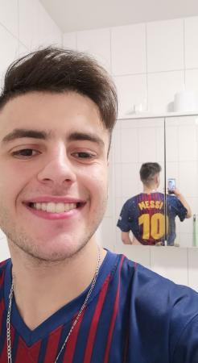
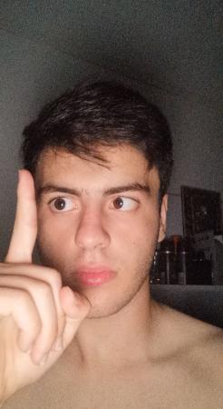
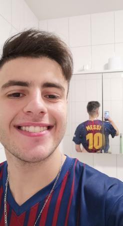
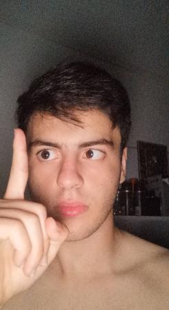
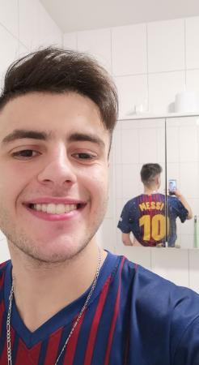
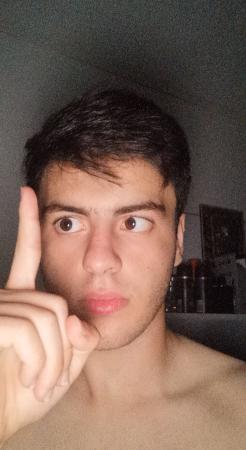
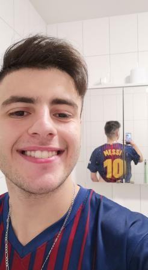
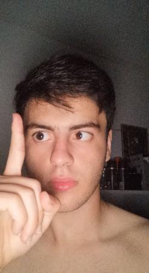

Ett nyligen skapat ord som planeras att liggas i det svenska/engelska språket. Ordet kan betyda allting, det är generellt helt enkelt
5ansa3oool är också ett ord som är skapad av Millad Akrawi. Den är lite äldre än shaskom men den har samma betydelse. Ordet utalas på detta vis, "khansaool". Det är faktiskt det svåraste ordet som Akrawi skapade och det är därför han inte har samma planer för detta ordet.
Shatambahos är den allra första ordet som Millad Akrawi skapade. Detta ordet är pappan till alla orden som Akrawi har skapat. Du kanske vad ordet betyder... Jo det betyder precis samma sak som de andra två orden. Används i allt, genrellt ord.